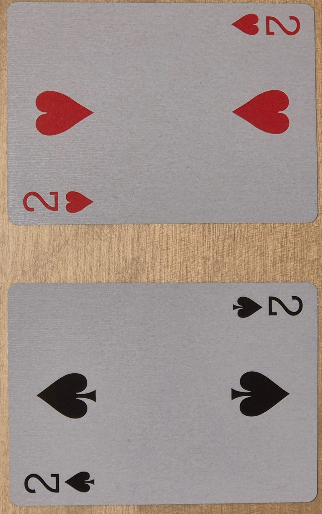
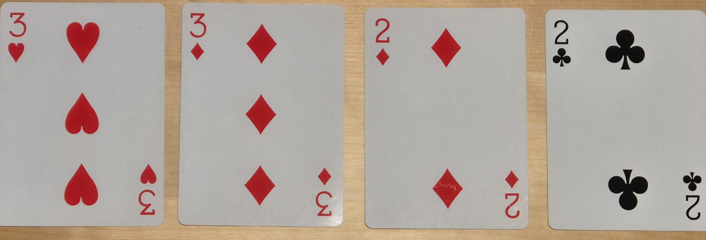
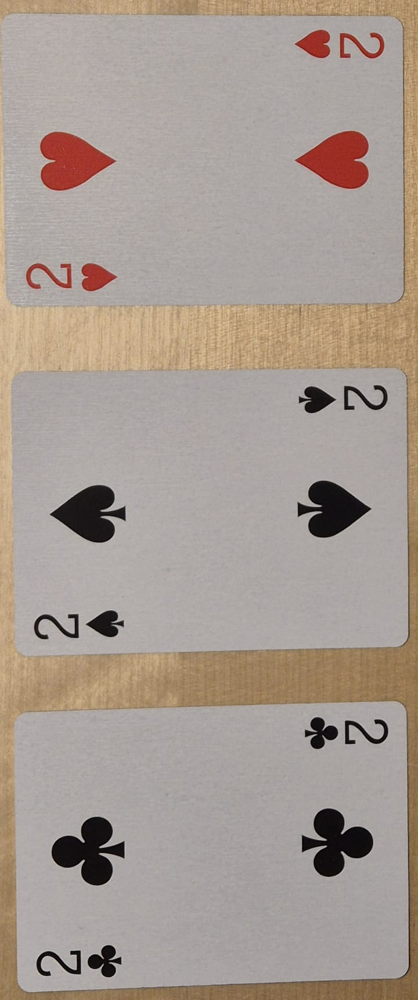
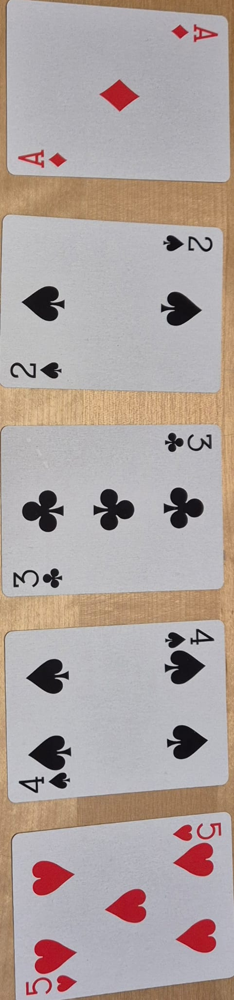
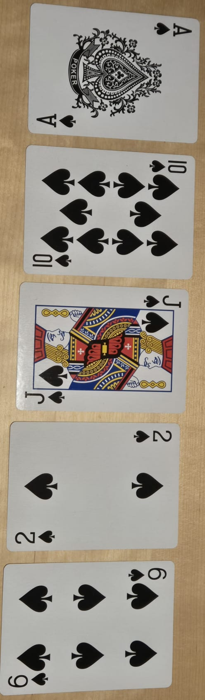
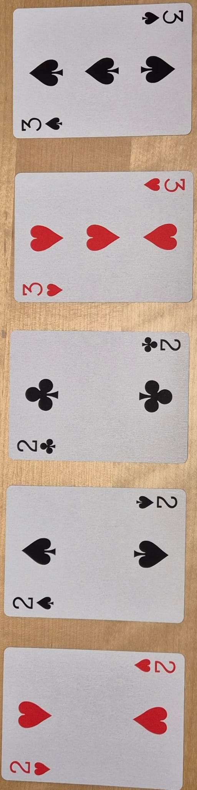
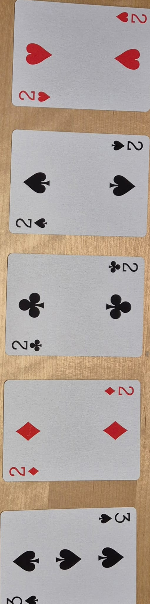

| Carta alta, se nessuno ha niente si guarda chi ha la carta che vale di più | |
|---|---|
 |
Questa è una coppia, per una coppia servono 2 carte dello stesso numero (poi fare anche coppie delle figure) |
 |
Questa è una doppia coppia, servono 2 coppie |
 |
Questo è un tris, per un tris servono 3 carte con lo stesso valore e 2 diverse |
 |
Questa è una scala, la scala si deve fare con la carte in sequenza |
 |
Questo è colore, si fa quando si hanno 4 carte diverse ma dello stesso seme |
 |
Questo è un full, e quando si ha un tris e una coppia |
 |
questo è un poker, si fa quando si hanno 4 carte dello stesso numero |
 |
Questa è una scala colore, si fa quando si hanno 5 carte dello stesso seme ma le carte devono essere in sequesnza |
 |
Questa è una scala reale, si fa quandio hai cinque carte in sequenza dello stesso seme |
Le combinazioni di carte con cui poi vincere
Infomazioni principali
Regole del dealer e infomazioni
Curiosita